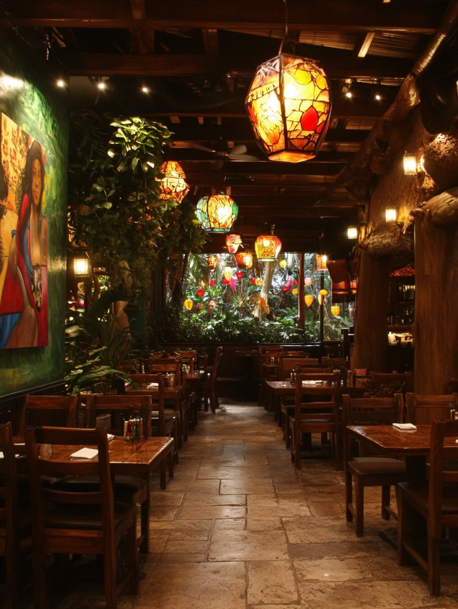

Traditional cooking methods passed down through generations
A Fusion of Flavors
Caribbean cuisine is a vibrant tapestry woven from the culinary traditions of African, European, Indian, and indigenous peoples. This unique blend reflects the region's rich history of cultural exchange.
The use of aromatic spices, fresh herbs, and local ingredients is at the heart of our cooking philosophy. From the fiery heat of scotch bonnet peppers to the warm embrace of allspice and cinnamon, our dishes celebrate the island's botanical bounty.
At Island Flavors, we honor these traditions while bringing our own innovative touch to classic recipes. Every dish is a love letter to the islands that inspired us, creating a dining experience that transports you to the sunny shores of the Caribbean.
500+
Years of culinary tradition
30+
Unique spice blends
100%
Authentic recipes